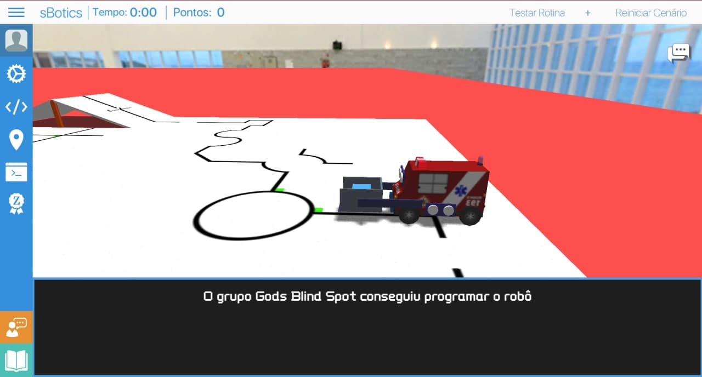

O Desafio Um era pra desencripitar uma mensagem.
E depois de desencripitar fazer o que pedido, que no caso era pra usar o sBotics pra dizer que o grupo conseguiu o concluir.
Sim, nós com nossa incrível reação rápida conseguimos salvar a mensagem encripitada, antes dela se auto-destruir
VW1hIG3DoXF1aW5hIGNvbXBsZXRhbWVudGUgZm9yYSBkZSBjb250cm9sZSBmb2kgcHJvZ3JhbWFkYSBwYXJhIGJvaWNvdGFyIG8gc2FsdmFtZW50byBkYXMgdsOtdGltYXMgbmEgcGxhdGFmb3JtYSBkYSBPQlIsIHNldSB0cmFiYWxobyDDqToNCkNyaWFyIHVtYSBjb250YSBubyBzaXN0ZW1hIGRhIHNCb3RpY3MNCkJhaXhhciBhIHBsYXRhZm9ybWEgZGUgZGVzZW52b2x2aW1lbnRvIHF1ZSBlbGVzIHVzYW0gcGFyYSBwcm9ncmFtYXIgb3Mgcm9iw7RzDQpjcmlhciB1bSBjw7NkaWdvIHBhcmEgbyByb2LDtCBxdWUgZXNjcmV2YSBubyBjb25zb2xlOg0K4oCcTyBncnVwbyBbbm9tZSBkbyBncnVwb10gY29uc2VndWl1IHByb2dyYW1hciBvIHJvYsO04oCdDQoNCk1hbmRlIHNldSBjw7NkaWdvIGUgdW1hIGZvdG8gZG8gc2V1IHJvYsO0IGNvbmNsdWluZG8gYSBtaXNzw6NvIHBhcmEgcHJvdmFyIHNldSBmZWl0byBlIHRyYW5xdWlsaXphciBhIG5hw6fDo28uDQpPIGPDs2RpZ28gZGV2ZSBzZXIgcG9zdGFkbyBubyBNb29kbGUgbm8gZsOzcnVtIOKAnFNvbHXDp8OjbyBkbyBkZXNhZmlvIEnigJ0uIA0KTyBsw61kZXIgZGV2ZSBjcmlhciB1bSBwb3N0IGUgY29sb2NhciBvIGPDs2RpZ28gZm9udGUgY29kaWZpY2FkbyBlbSBCYXNlNjQgcGFyYSBxdWUgb3MgQXJnb3Jnc3MgbsOjbyBjb25zaWdhbSBhdHJhcGFsaGFyIG5vc3NvcyBwbGFub3MuDQpBIGZvdG8gZGV2ZSBzZXIgZW52aWFkYSBwYXJhIGFuw6FsaXNlIHBlbG8gbWVpbyBkZSBjb211bmljYcOnw6NvIHNlZ3VybyBxdWUgbyBncnVwbyB0ZW0gY29tIG91dHJvcyBtZW1icm9zIGRhIHJlc2lzdMOqbmNpYS4gDQpOw6NvIGRlaXhlIHF1ZSBzdWEgc29sdcOnw6NvIHZhemUsIG9zIEFyZ29yZ3NzIGFjYWJhcsOjbyBjb20gdHVkbyBlIGVsZXMgasOhIHPDo28gYSBtYWlvcmlhLg0KDQpHcmF0bywgDQoNCiAgICDilrINCiAg4payIOKWsg0KQSByZXNpc3TDqm5jaWEu
Uma máquina completamente fora de controle foi programada para boicotar o salvamento das vítimas na
plataforma da OBR, seu trabalho é: Criar uma conta no sistema da sBotics Baixar a plataforma de desenvolvimento que eles usam para programar os robôs criar um código para o robô que escreva no console: “O grupo [nome do grupo] conseguiu programar o robô” Mande seu código e uma foto do seu robô concluindo a missão para provar seu feito e tranquilizar
a nação. O código deve ser postado no Moodle no fórum “Solução do desafio I”. O líder deve criar um post e colocar o código fonte codificado em Base64 para que os Argorgss
não consigam atrapalhar nossos planos. A foto deve ser enviada para análise pelo meio de comunicação seguro que o grupo tem com outros
membros da resistência. Não deixe que sua solução vaze, os Argorgss acabarão com tudo e eles já são a maioria. Grato, ▲ ▲ ▲ A resistência.